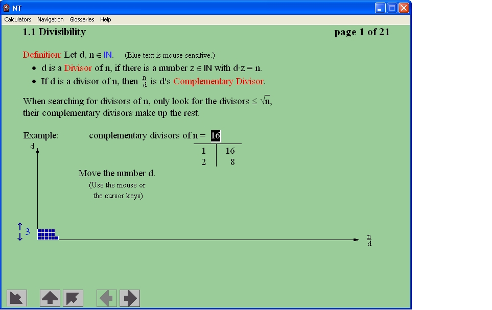
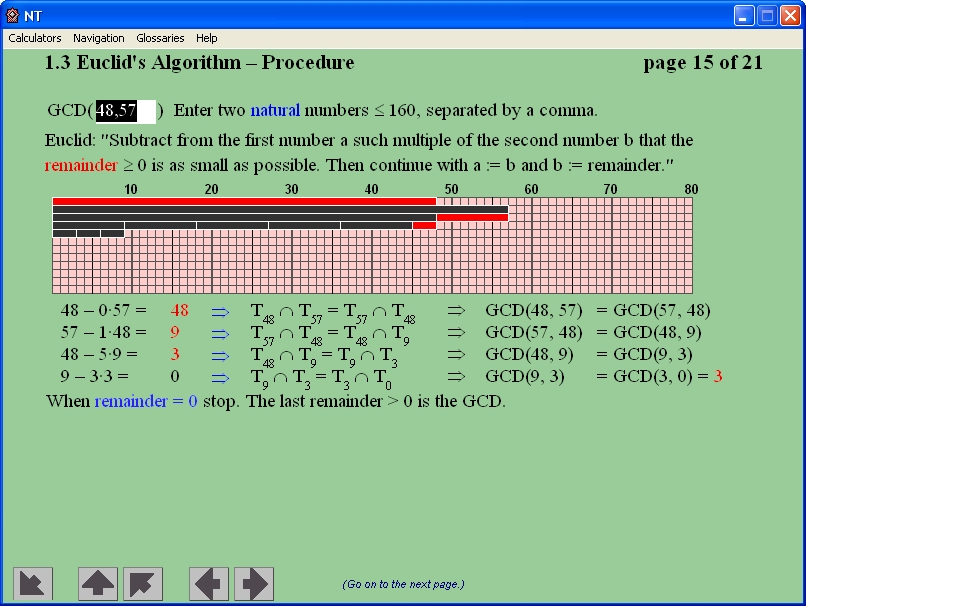
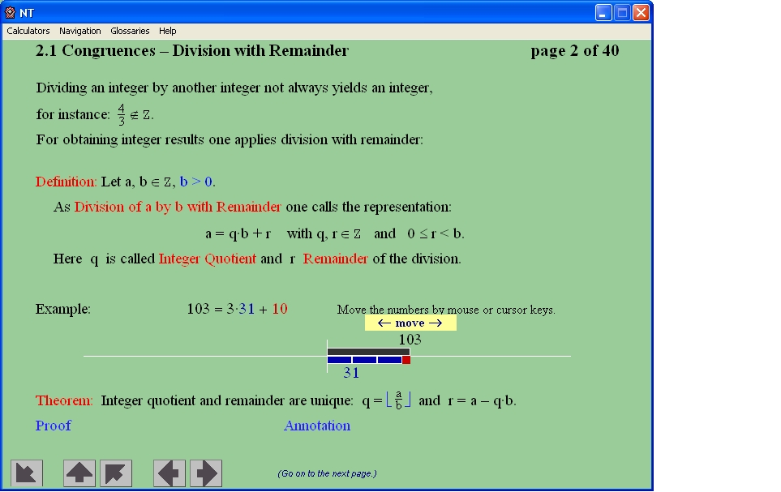

You can reach this dialog using the menu entry Individual Procedures \ Number Theory - Interactive \ Learning Tool for Number Theory.
The educational tool "NT" (Number Theory) developed by Martin Ramberger introduces number theory and visualizes many of the methods and concepts. Where appropriate, the mathematical formulas are shown. It allows to dynamically check out the mathematical methods with own number examples. It can be best used accompanying the reading of an according book.
This visualization was build with Authorware 4.
Number theory, formerly called arithmetic, is a very old branch of pure mathematics concerned with the properties of numbers in general, and integers in particular, as well as the wider classes of problems that arise from their study (like solving equations in integers = Diophantine equations).
Gauss considered number theory the "queen of mathematics", as beautiful as perfectly useless. Therefore it normally found no place in the school’s curriculum, so not many people know about number theory. Finally in the 20th century number theory was widely used for asymmetric encryption, digital signatures and modern key exchange protocols.
Methods and problems from number theory are the basis of modern public-key cryptography.
Samples and Operating
Within the Authorware application you can use the arrows Back, Next page and Previous page to always get back to the beginning of a learning unit. Within a learning unit you get the next screen using the Enter key -- normally such a page contains a white framed arrow, which you should click directly:
Further explanations are displayed in sub windows. All sub windows are displayed within the Authorware main windows as modal windows. You can close all sub windows with the Escape key.
The operating is explained exhaustively within the educational program in the menu item Help \ Program Handling (F1).



The Educational Tool Covers the Following Topics
The Educational Tool is Made up of the Following Learning Units
1. Integers
1.1 Divisibility
1.2 Primes
1.3 Euclid's Algorithm
1.4 The LCM
2. Residue Classes
2.1 Congruences
2.2 Prime Residue Classes
2.3 Subgroups
2.4 Primitive Residue Classes
3. Prime Generation
3.1 Finding Primes
3.2 Fermat Test
3.3 Miller-Rabin Test
4. Public Key Cryptography
4.1 Cryptography
4.2 RSA
4.3 Other Ciphers
5. Factorization
5.1 Finding Divisors
5.2 Fermat Factorization
5.3 Pollard's Rho Factorization
5.4 Pollard's p-1 Factorization
5.5 Quadratic Sieve Factorization
6. Discrete Logarithms
6.1 Finding Exponents
6.2 Shanks' Babystep Giantstep Method
6.3 Pollard's Rho Algorithm
6.4 Other Methods
Remark 1: Limits of Numbers to be Used as Samples within the Educational Tool
Within this Authorware educational tool all selectable numbers are limited in their size: On the one hand this results from the layout (in order to fit into the graphics), on the other hand because the performance of the calculations within Authorware is relatively slow (the methods are programmed within this mathematical educational software, so their performance is much slower than what you can achieve within CrypTool, which is implemented in C++). But for purposes of learning and understanding no sample with really big numbers are necessary.
Here are some samples for these limitations:
Remark 2: Thesis Written in Combination with this Educational Tool
The thesis, which led to the initial German version of the number theory educational programme, can be found at http://www.uni-koblenz.de/~rambo/ZT.pdf. Please mind that this thesis only exists in German.
Remark 3: BC (arbitrary precision calculator)
Part of the distribution of the educational tool "Number Theory" is the command line calculator bc (version 1.06, published by Free Software Foundation under GPL).
Bc is both a programming language that supports arbitrary precision numbers and an arbitrary precision calculator program, which handles scripts and commands written in the language bc and interactively executes the statements from the user. This tool can be used to do some of the number theoretical calculations with higher speed and higher precision than from within the educational tool.